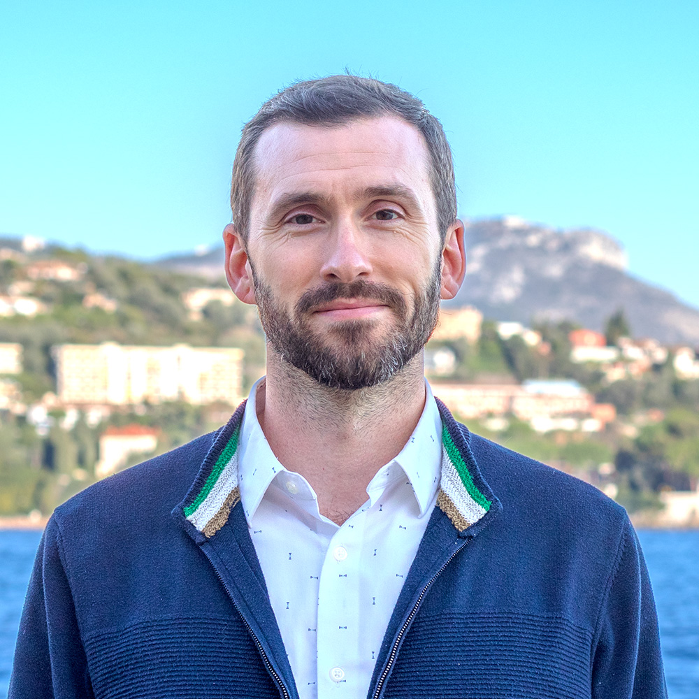

Results-oriented professional with over a decade of experience on international projects at the nexus of climate and ecology. As a resourceful problem solver, I draw upon my robust academic research background to develop practical solutions based on science and technology to support resilience against the adverse effects of climate change on both human communities and the environment.